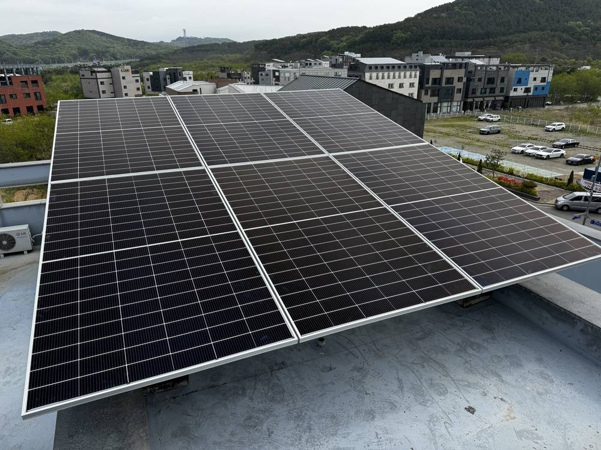

인천 영종구, 내년 227곳에 태양광·태양열·지열 보급…총사업비 41억9,000만 원

2027년 재생에너지 융복합지원사업 A등급 선정, 국비 16억5,000만 원 / 올해 기준 주택 태양광 3kW 주민 부담은 설치비의 18%
인천 영종구가 2027년 관내 227곳에 태양광·태양열·지열 설비를 보급한다. 기후에너지환경부와 한국에너지공단이 주관하는 「2027년 재생에너지 융복합지원사업」 공모에서 최고 등급인 A를 받아 선정됐다고 구가 11월 16일 밝혔다.
사업비는 국비 16억5,000만 원, 시비 9억7,000만 원, 구비 9억1,000만 원에 주민 자부담을 더해 모두 41억9,000만 원이다. 설비별로는 태양광 192곳, 태양열 7곳, 지열 28곳이다.
구 누리집의 올해 사업 안내를 보면 주택 태양광 3kW 한 곳의 설치비 494만100원 가운데 주민 부담은 89만9,100원(18%)이고 나머지는 국비·시비·구비로 채운다. 구는 컨소시엄 참여 기업들과 업무협약을 맺은 뒤 2027년 2월부터 사업을 시작할 계획이다.
시민에너지 관점
영종구 계획대로면 내년 한 해 227곳에 재생에너지 설비가 들어선다. 올해 기준으로 주택 태양광은 설치비의 18%만 내면 집 전기를 직접 만들 수 있다. 다만 이 사업은 집집마다 따로 설비를 다는 방식이라, 이웃과 함께 발전소를 세워 수익을 나누는 길과는 다르다. 국비·시비·구비 35억3,000만 원이 들어가는 만큼, 구는 개별 보급과 함께 공공건물 지붕을 주민이 출자하는 협동조합 발전소에 내주는 사업도 같은 계획표에 올려야 한다.
출처: 인천광역시 영종구 2026-11-16 보도자료 「영종구, ‘발로 뛴 행정’으로 재생에너지 융복합지원사업 ‘역대 최대 예산’ 확보」(경제지원과) 원문 보기
출처: 인천광역시 영종구 열람 2026-11-18 재생에너지 지원 정책(2026년 재생에너지 융복합지원사업 안내) 원문 보기
仁川・永宗区、来年227か所に太陽光・太陽熱・地熱を普及…総事業費41億9,000万ウォン
2027年再生エネルギー融複合支援事業でA等級、国費16億5,000万ウォン / 今年の基準で住宅用太陽光3kWの住民負担は設置費の18%
仁川市永宗区は2027年、区内227か所に太陽光・太陽熱・地熱設備を普及させる。気候エネルギー環境部と韓国エネルギー公団が主管する「2027年再生エネルギー融複合支援事業」の公募で最高等級のAを得て選ばれたと、区が11月16日に明らかにした。
事業費は国費16億5,000万ウォン、市費9億7,000万ウォン、区費9億1,000万ウォンに住民の自己負担を加えて計41億9,000万ウォンだ。設備別では太陽光192か所、太陽熱7か所、地熱28か所となる。
区のウェブサイトにある今年の事業案内によると、住宅用太陽光3kW1か所の設置費494万100ウォンのうち住民負担は89万9,100ウォン（18%）で、残りは国費・市費・区費で賄う。区はコンソーシアム参加企業と業務協約を結んだうえで、2027年2月から事業を始める計画だ。
市民エネルギーの視点
永宗区の計画通りなら、来年1年間で227か所に再生エネルギー設備が入り、今年の基準通りなら住宅用太陽光は設置費の18%を払えば家の電気を自ら作れるようになる。ただ、この事業は家ごとに別々に設備を付ける方式で、隣人と一緒に発電所を建てて収益を分け合う道とは異なる。国費・市費・区費35億3,000万ウォンが投じられる以上、区は個別の普及とあわせて、公共建物の屋根を住民が出資する協同組合の発電所に提供する事業も同じ計画表に載せるべきだ。
出典: 인천광역시 영종구 2026-11-16 보도자료 「영종구, ‘발로 뛴 행정’으로 재생에너지 융복합지원사업 ‘역대 최대 예산’ 확보」(경제지원과) 原文を読む
出典: 인천광역시 영종구 열람 2026-11-18 재생에너지 지원 정책(2026년 재생에너지 융복합지원사업 안내) 原文を読む
仁川永宗区明年将在227处推广太阳能光伏、太阳能热和地热…总投资41亿9,000万韩元
获评2027年可再生能源融合支援项目A级，国费16亿5,000万韩元 / 按今年标准，住宅3kW光伏居民负担为安装费的18%
仁川永宗区将于2027年在辖区内227处推广太阳能光伏、太阳能热和地热设备。区政府11月16日表示，在气候能源环境部和韩国能源公团主管的"2027年可再生能源融合支援项目"公开招募中获得最高等级A而入选。
项目费用为国费16亿5,000万韩元、市费9亿7,000万韩元、区费9亿1,000万韩元，加上居民自付部分共41亿9,000万韩元。按设备分，太阳能光伏192处、太阳能热7处、地热28处。
根据区政府网站上的今年项目说明，一处住宅3kW光伏的安装费494万100韩元中，居民负担89万9,100韩元（18%），其余由国费、市费和区费承担。区政府计划与联合体参与企业签订业务协议后，从2027年2月开始实施项目。
市民能源视角
按永宗区的计划，明年一年将有227处装上可再生能源设备，若沿用今年标准，住宅光伏只需支付安装费的18%就能自己发电。不过，这一项目是各家各户分别安装设备的方式，与邻里共同建电站、分享收益的道路不同。既然投入了国费、市费和区费共35亿3,000万韩元，区政府应在个别推广之外，把向居民出资的合作社电站开放公共建筑屋顶的项目也列入同一份计划。
来源: 인천광역시 영종구 2026-11-16 보도자료 「영종구, ‘발로 뛴 행정’으로 재생에너지 융복합지원사업 ‘역대 최대 예산’ 확보」(경제지원과) 查看原文
来源: 인천광역시 영종구 열람 2026-11-18 재생에너지 지원 정책(2026년 재생에너지 융복합지원사업 안내) 查看原文
Incheon's Yeongjong-gu to put solar, solar thermal and geothermal at 227 sites next year, with 4.19 billion won budget
District wins top A grade in 2027 renewable energy convergence programme, 1.65 billion won national funding / Under this year's terms, residents bear 18% of the cost of a 3kW home solar system
Yeongjong-gu in Incheon will install solar power, solar thermal and geothermal systems at 227 sites in the district in 2027. The district said on Nov. 16 that it had been selected for the "2027 Renewable Energy Convergence Support Programme," run by the Ministry of Climate, Energy and Environment and the Korea Energy Agency, with the top grade of A.
Funding comprises 1.65 billion won from the national government, 970 million won from the city and 910 million won from the district, plus residents' own contributions, for a total of 4.19 billion won. By type, there will be 192 solar power sites, seven solar thermal sites and 28 geothermal sites.
According to this year's programme guide on the district website, residents bear 899,100 won (18%) of the 4,940,100 won cost of a 3kW home solar system, with the rest coming from national, city and district funds. The district plans to sign agreements with the consortium's participating companies and start the work in February 2027.
Citizen Energy View
If Yeongjong-gu's plan holds, renewable systems will go in at 227 sites in a single year, and on this year's terms households can make their own electricity by paying just 18% of the cost of a home solar system. But the programme fits equipment household by household, which is different from neighbours building a plant together and sharing the income. With 3.53 billion won of national, city and district money going in, the district should put a scheme to open public building roofs to resident-funded cooperative power plants on the same plan as the individual installations.
Source: 인천광역시 영종구 2026-11-16 보도자료 「영종구, ‘발로 뛴 행정’으로 재생에너지 융복합지원사업 ‘역대 최대 예산’ 확보」(경제지원과) Read the original
Source: 인천광역시 영종구 열람 2026-11-18 재생에너지 지원 정책(2026년 재생에너지 융복합지원사업 안내) Read the original